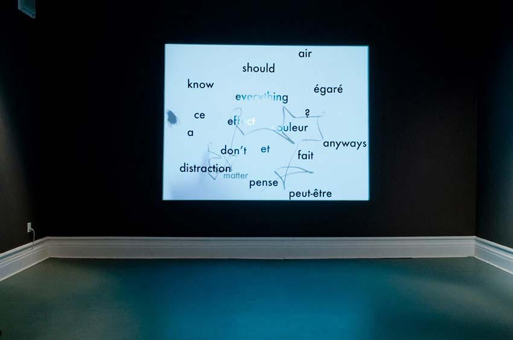
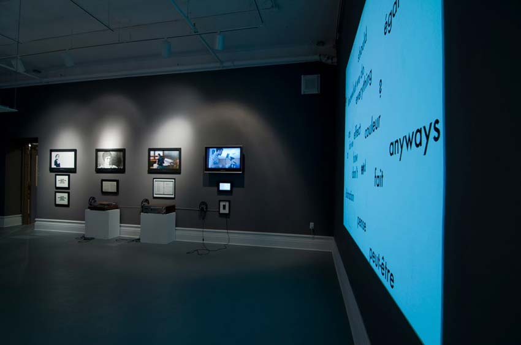

Jessica Arseneau
:: portfolio
Travail
Égarer des mots
2012
Projection vidéo sur mots vinyle
En boucle
Dans l'exposition Soif de parole commissarié par Amanda Dawn Christie, Galerie Sans nom, Moncton NB



Égarer des mots illustre une conversation interne qui porte sur l’indécision. Des mots vinyles en français, en chiac et en anglais sont collés au mur et la projection vidéo émet une ligne qui dessine des connexions entre eux afin de créer des phrases fragmentaires qui passent du dialecte à la langue correcte. De nouveaux mots s'ajoutent, s'effacent et une mouche passe de temps à autre.
« Cette oeuvre joue essentiellement sur la surface alternant entre celle réelle, concrète et immuable du mur de la galerie, où sont inscrits des mots tout aussi fixes, et la surface virtuelle où sont projetés ceux qui s'y superposent au travers de ces lignes mystérieuses, dessinées par des mains qu'on ne voit jamais. Cette oeuvre est fascinante par ce jeu des divers plans qui se relaient constamment dans une dynamique propre à la vidéo, à la fausse profondeur qu'elle installe et à la présence virtuelle qu'elle projette dans la galerie d'art ».
- Herménégilde Chiasson, Liaison no. 158, La revue des arts Acadie, Ontario, Ouest, «Soif de parole, Une identité acadienne à l'épreuve de la modernité », p. 25, 2012
Crédits photos : Mathieu Léger